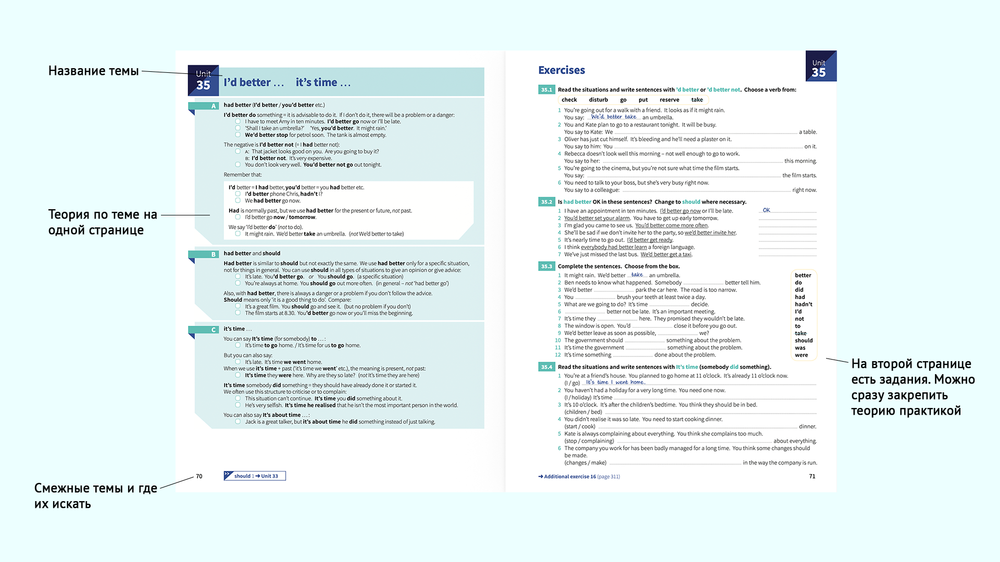
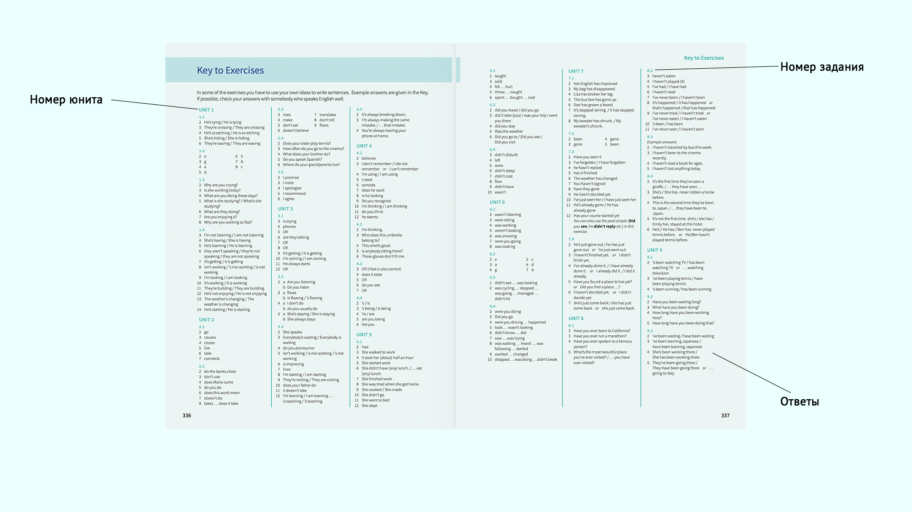
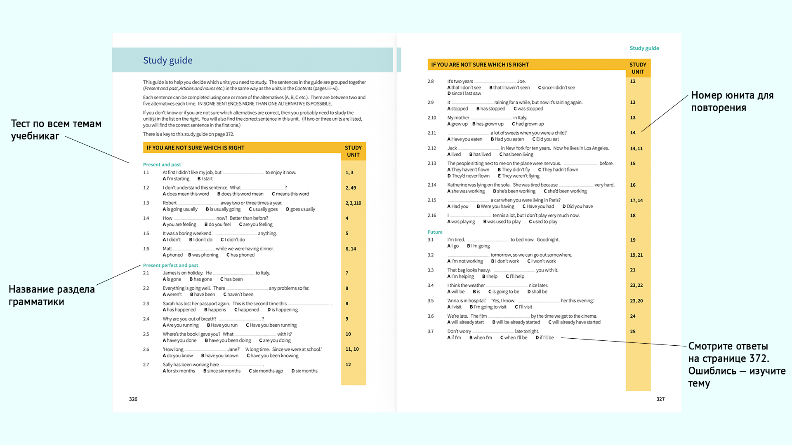

В этой статье я расскажу, как учить английский самостоятельно: дам конкретные инструменты и советы для самостоятельного изучения языка. Для кого эта статья:
— для тех, кому кажется, репетиторы и курсы отнимают много денег и времени, а язык учить хочется;
— кто уже знает основы: учил английский в детстве с репетитором или в школе;
— хочет повысить свой уровень.
Эти советы не подойдут тем, кто не знает язык совсем. В таком случае лучше сначала обратиться к эксперту и начать учиться с ним. Без знания основ легко наделать ошибок.
Зачем и как определить свой уровень английского
Знание уровня помогает поставить цель и правильно выбрать, что слушать и читать. Например, человеку с уровнем А2 будет трудно смотреть «Гарри Поттера», а «Свинку Пеппу» легко.
Тесты в интернете — самый простой способ определить уровень. Но у всех тестов есть недостаток: они не оценивают умение разговаривать на английском.
Полезнее будут бесплатные консультации в онлайн-школах. Они хороши тем, что не ограничиваются тестами. На консультации будет присутствовать методист, который пообщается с вами на английском и оценит владение английской речью.
Ещё одно их преимущество — методист расскажет, что именно подтянуть и как это сделать.
Минус — такие консультации изначально рассчитаны продавать курсы и занятия. Записываясь на консультации, будьте готовы к этому и помните, что не обязаны ничего покупать.
Грамматика
Учебники Раймонда Мёрфи. Essential Grammar in Use и English Grammar in Use. Пособия предназначены для самостоятельного изучения для уровней А1 — В2. Далее подробнее о втором из них.

На иллюстрации показано устройство большей части учебника. На одной странице теория, на следующей — практика

В конце учебника к каждому заданию есть ответы для самопроверки

Если не знаете, какие темы нужно повторять и учить, а тратить время на всё подряд не хочется — используйте Study Guide в конце учебника. На странице 372 есть ответы. Ошиблись — изучите тему
Ютуб. Грамматику можно изучать и по роликам в интернете. На ютубе много каналов, посвящённых изучению языка. Некоторые из них ведут англоязычные преподавателя. На видео они говорят медленно, поэтому их легко понять.
Без понимания речи говорящего невозможно использовать английский язык в разговоре. Способов развивать аудирование много. Начните с того, что подходит по уровню и постепенно усложняйте.
Аудиокниги. Их можно просто слушать, а можно слушать и читать одновременно: читать и слушать одновременно. Получается двойная нагрузка на мозг. Видите слово — запоминаете и сам слово, как оно произносится.
Фильмы, мультфильмы и сериалы. Для начала хорошо подойдут те фильмы, которые вы уже смотрели на родном языке. Если тяжело, сначала смотрите с субтитрами, потом — без.
Видео- и аудиоконтент. Подкасты, интервью, блоги, обучающие видео — слушайте что нравится. Часто преподаватели выкладывают на ютуб видео, предназначенные для развития аудирования. Лучше слушать носителей. В начале будет трудно, но чем дольше слушаете — тем легче становится. Важна привычка слышать английскую речь.
Чтение
Лучший способ узнать новые слова — читать. Увидели незнакомое слово, перевели, сделали заметку. Для чтения подойдёт и художественная литература, и книги по профессии, и специализированные журналы. Рекомендую книги про Гарри Поттера. По мере взросления героев, усложняется и язык.
Не зацикливайтесь на одном жанре. Для развития читайте разную литературу.
Дальше мысль для тех, кто хочет читать на английском, но боится. Не ждите, пока выучите язык. Берите и просто читайте. Для незнакомых слов существуют переводчики и словари.
Общение
Возможно, здесь вам стало страшно. Люди боятся говорить на иностранном, так как боятся ошибиться или звучать глупо.
Попросите о помощи друга, знающего язык. С ним ошибаться не так страшно. Рассказывайте новости и сплетни, но на английском. Даже пятиминутного голосового сообщения достаточно. Пусть друг аккуратно поправляет ошибки. Ещё лучше, если он будет не только слушать, но и сам говорить.
Разговорный клуб — тоже хорошая практика. На встречах вы будете слышать разную речь и говорить на большее количество тем. В этом плане общение с одним человеком ограничено.
Но есть и минусы:
— подходящий клуб нужно найти;
— говорить с большим количеством незнакомцев страшнее, чем с одним близким;
— встреча в клубе длится час или полтора;
— если не встреча в онлайне, придётся потратить время на дорогу.
Для начала выбирайте, что комфортнее. Страх преодолеете со временем.
Лексика
Самое бесполезное — зубрить списки слов. Разберём, что полезно.
Читать и слушать. Слова нужно запоминать в контексте их употребления, чтобы понимать, когда их использовать. Многие слова и выражения запоминаются сами собой, если часто повторяются или вызывают эмоцию.
Говорить. По сути это закрепление теории практикой. Вы узнаёте новое слово и сразу употребляете в разговоре.
Использовать карточки. Если хватает терпения, фиксируйте новые слова на карточках и играйте с ними. Есть много приложений и программ для создания карточек работы с ними.
Повседневность и дисциплина
Чтобы заговорить на английском, практикуйтесь регулярной. Используйте английский язык в жизни постоянно. Он должен стать привычкой и рутиной. В конце концов в голове должен быть не перевод слова, а образ.
Вот что можно сделать:
— настроить ленту соцсетей на англоязычный контент;
— в настройках телефона и компьютера перевести систему на английский язык;
— в компьютерных и мобильных играх выбирать английский язык, а не русский.
Однако это не значит, что заниматься не нужно совсем. Изучение грамматики потребует отдельного времени. Выделяйте время на английский в расписание, чтобы изучение было систематическим. Ведёте список дел — включите в него занятие английским: изучение грамматики или чтение. И выполняйте этот пункт списка. 10 минут в день будет достаточно, чтобы мозг заработал.
Автор: Кира Мельниченко, студентка Школы редакторов Бюро Горбунова